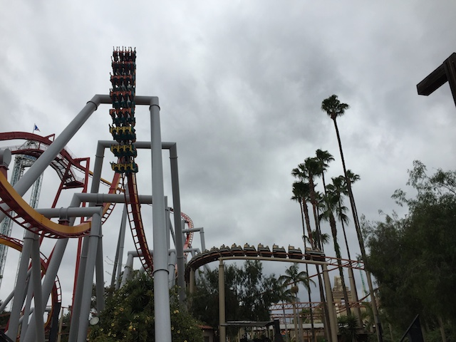
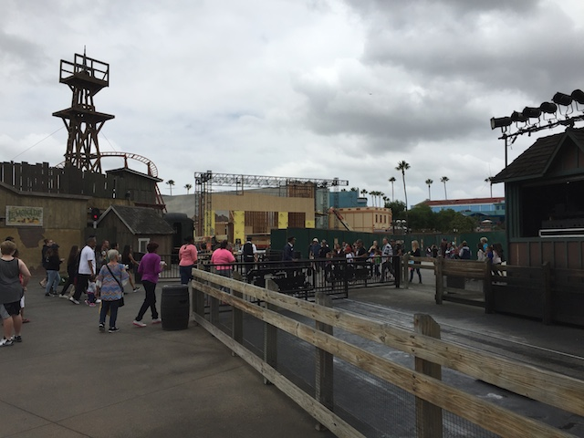
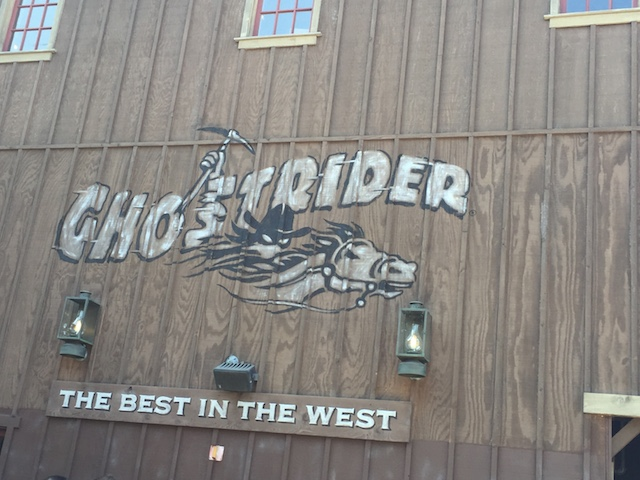
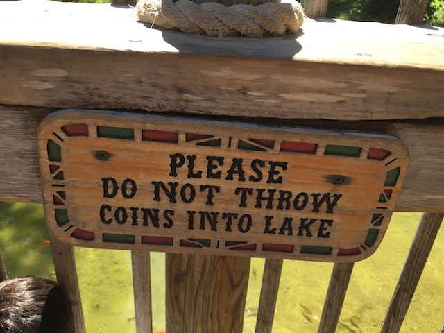
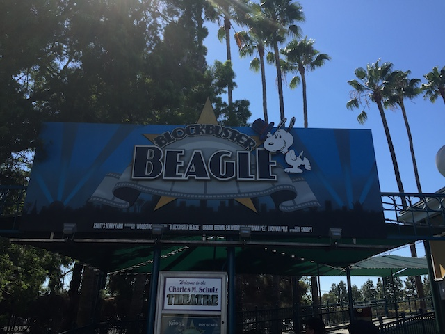
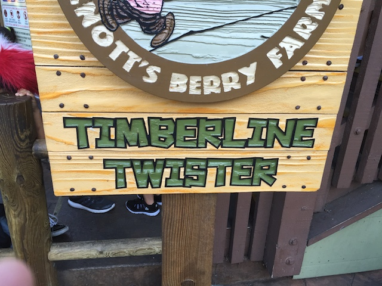
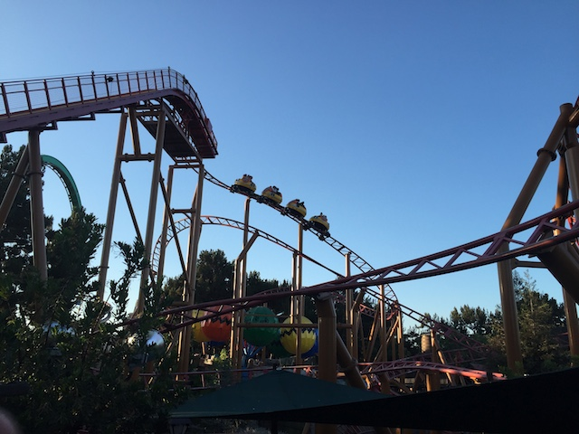
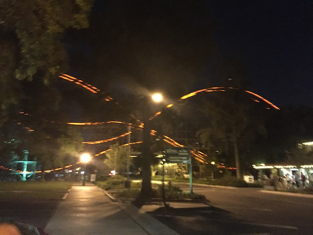

| |
Knotts Summer 2016
 All right. Time for another update. We're back at Knotts Berry Farm, and much like with Six Flags Magic Mountain, we took multiple visits and instead of just deciding to have a bunch of small Knotts Updates, just decided to do one big update (and to be fair, this is a pretty big one). So all right. We're at Knotts for Visit #1. HOLY CRAP!!! NOT WORTH IT!!!
All right. Time for another update. We're back at Knotts Berry Farm, and much like with Six Flags Magic Mountain, we took multiple visits and instead of just deciding to have a bunch of small Knotts Updates, just decided to do one big update (and to be fair, this is a pretty big one). So all right. We're at Knotts for Visit #1. HOLY CRAP!!! NOT WORTH IT!!!
 All right. Starting out the morning with some nice Scwarzkoph Shuttle Loop goodness always sounds like a good idea to me. =)
All right. Starting out the morning with some nice Scwarzkoph Shuttle Loop goodness always sounds like a good idea to me. =)

Fun fact. I was at a party the night before (which was AWESOME!). So yeah. I was hungover at Knotts Berry Farm. And you know what? You really notice the forces on Silver Bullet more when hungover.

Ooh. That new stage that replaced Screaming Swing has finally opened up.
It may sound weird, but McDonalds actually works really well as a hangover cure.
RMC has left their mark on the McDonalds curb. =)
Is Supreme Scream open today?
 You can't have a visit to Knotts Berry Farm and not ride Xcelerator.
You can't have a visit to Knotts Berry Farm and not ride Xcelerator.
 Ariel view of Silver Bullet from the Sky Tower.
Ariel view of Silver Bullet from the Sky Tower.

All right. Visit #2. Gee. I wonder why we came back to Knotts Berry Farm?
I heard one of their big coasters got a big makeover. But which one?
Yeah. We came to check out Ghostrider, which got completely retracked as well as new Millenium Flyer trains to bring it back to its former glory.
 Now I've always liked Ghostrider. I never thought it was super rough and terrible. But they did a really good job at a makeover.
Now I've always liked Ghostrider. I never thought it was super rough and terrible. But they did a really good job at a makeover.
 If you had any concerns about roughness before, well fear no more. GCI made Ghostrider smooth as glass. There's not a single jolt in the ride anymore.
If you had any concerns about roughness before, well fear no more. GCI made Ghostrider smooth as glass. There's not a single jolt in the ride anymore.
 And thanks to them getting rid of the mid course brake, the second half is much crazier now. Love how its back to its good old agressive self. =)
And thanks to them getting rid of the mid course brake, the second half is much crazier now. Love how its back to its good old agressive self. =)
F*CK!!! Good thing we got in line when we did.
Oh, and they brought back the Pan for Gold attraction to its original location right by Ghostrider. Not super interested in trying since I've panned for actual gold in Alaska before, but I love it when parks add to theming and have cool stuff to do, and panning for gold is TOTALLY up there.
David is not happy that these horses have to work.
Ghostrider from the Marketplace.
Anyone want to go to Lagoon?
Oh. It's just an actual lagoon. =( Well, it's still very pretty.
"Why did the chicken cross the road?"
Oh look. I appeared back in Philadelphia. Good thing too. I've been overdue to get back to Hersheypark since its been 9 years. =)
 Actually, I went over to Soak City across the street from Knotts Berry Farm. Now I had been to this water park before, but it was 15 years ago. I never went because its a seperate gate. But when you have a Platinum Pass and can get in for free, why not take advantage of it and go to a water park you haven't visited in 15 years, have some fun memories of, and see how the park is doing a decade and a half later.
Actually, I went over to Soak City across the street from Knotts Berry Farm. Now I had been to this water park before, but it was 15 years ago. I never went because its a seperate gate. But when you have a Platinum Pass and can get in for free, why not take advantage of it and go to a water park you haven't visited in 15 years, have some fun memories of, and see how the park is doing a decade and a half later.
 Getting some flashbacks to Soak City Palm Springs.
Getting some flashbacks to Soak City Palm Springs.
Yeah. Those things are fun. But we've got better things planned.
First up, Malibu Run.
These may not be the fastest of craziest slides out there, but they're a lot of fun, and I enjoyed them.
 OK, let's move onto their star attraction and head over to Old Man Falls (Hey old man cliff jumping!!! You kick ass!!! Rock on fellow cliff jumper!!!).
OK, let's move onto their star attraction and head over to Old Man Falls (Hey old man cliff jumping!!! You kick ass!!! Rock on fellow cliff jumper!!!).
 Now Old Man Falls is basically a clone of Taboo Tower from Six Flags Hurricane Harbor. Only more colorful. Hey, it's a lot of fun. =)
Now Old Man Falls is basically a clone of Taboo Tower from Six Flags Hurricane Harbor. Only more colorful. Hey, it's a lot of fun. =)
Random fun water slide.
 Got to check out their mat racer water slide, Banzai Falls.
Got to check out their mat racer water slide, Banzai Falls.
It's fun, but this slide really needs to be operated better. Seriously, people were just going randomly. The whole point of the mat racers is to race!! Well, at least I can still race my friends.
And hey. Evan losing his mat at the bottom was certainly fun to see.
 And finally, we have to check out their Pacific Spin (Gee, really reminding me of Soak City Palm Springs).
And finally, we have to check out their Pacific Spin (Gee, really reminding me of Soak City Palm Springs).
Now this is actually the last season for Pacific Spin (OH NO!!! WHATEVER WOULD WE DO WITHOUT YET ANOTHER TORNADO CLONE!!!). But the new slide complex replacing it looks fun.
But hey. These Tornado slides still are a lot of fun, and I'm happy that I'll still have one at Six Flags Hurricane Harbor.
 We've been standing out in the sun all day. I think it's time that we "SIT DOWN!!!".
We've been standing out in the sun all day. I think it's time that we "SIT DOWN!!!".
Timber Mtn Log Ride vs Silver Bullet. FIGHT!!!
Anyone hungry for Fried Cheese on a Stick?
Yeah. Of course we had to do Calico Mine Ride this time around.
Boomerang at sunset.
Flashbacks for all you old folks who were around for back when all this stuff was at Knotts Berry Farm.
 Oh yeah. They also gave Mrs. Knotts Chicken Dinner a makeover. So of course, we had to eat there and see how it looked.
Oh yeah. They also gave Mrs. Knotts Chicken Dinner a makeover. So of course, we had to eat there and see how it looked.
HOLY CRAP!!! IT LOOKS FREAKING AMAZING NOW!!!
And of course, the food is still really good. I love Mrs. Knotts Chicken.
If you ever get a chance, get some of the Boysenberry Tea from Knotts Berry Farm. It is awesome! =)
 Wow. Knotts has really progressed on LGBT rights, showcasing a same sex couple kissing. I approve. Thumbs up for Knotts Berry Farm. =)
Wow. Knotts has really progressed on LGBT rights, showcasing a same sex couple kissing. I approve. Thumbs up for Knotts Berry Farm. =)
All right. Time for Visit #3. We're doing something different and checking out the Mystery Lodge.
 Ooh. Prettiness.
Ooh. Prettiness.

Please don't waste your money.
Hey Ceaser! I finally met your family!

Speaking of new stuff, I managed to see the Blockbuster Eagle Ice Skating Show today as well.
This is the 2nd time I ever saw a Snoopy Ice Skating Show (only saw their Christmas Show). And I honestly liked it.
Ugh. Typical California Tourists.
Snoopy skating with his California Girls (they played both the Beach Boys version as well as the Katy Perry one).
Hello Knotts Berry Farm!!! =)
Play it again Snoopy.
Dude, we got all 5 of us in one boat and we freaking bottomed out and had to push ourselves onto the lifthill. That was freaking amazing. =)
"Hand over the Boysenberry Tea and nobody gets hurt!"
 OK. It's been WAY too long sine we rode Xcelerator. Gotta get on a coaster today.
OK. It's been WAY too long sine we rode Xcelerator. Gotta get on a coaster today.
 That launch still gets me every single time.
That launch still gets me every single time.
"I love this ride".
Why is it that this frisbee only seems to get stronger with age? Seriously, this was by far, the strongest I've ever seen La Revolution run.

Oh wait. There's still one last credit at Knotts Berry Farm Andrew needs to get.
F*ck! Sorry dude. This is one credit you're not going to get.
Who the hell decided to rank Timberline Twister as a 4?
Timberline Twister is actually a decent kiddy coaster. I would've ridden it again today if it wasn't for the ride being swarmed with kids, as well as that maximum height restriction.
HOLY SH*T!!! THEY LET HIM ON!!! I CAN'T BELIEVE IT!!! I thought for sure that he was going to get denied. But nope. I guess the operator took pity on him for being a credit whore from Florida.
(Photo by Evan Darlington)
 Oops. Forgot about Sierra Sidewinder. Need that as well.
Oops. Forgot about Sierra Sidewinder. Need that as well.
Hey everyone! Sierra Sidewinder and Timberline Twister have the same thrill rating!

Still a very fun spinning coaster.
 Dude! Sierra Sidewinder was hauling ass! Easily the most I've seen it spinning in a LONG LONG time. Because it normally does not spin as much as it did today.
Dude! Sierra Sidewinder was hauling ass! Easily the most I've seen it spinning in a LONG LONG time. Because it normally does not spin as much as it did today.
 Sorry folks. The Stagecoach is closed for the night. You missed it. =P
Sorry folks. The Stagecoach is closed for the night. You missed it. =P
Night time ride on Silver Bullet.
 Yeah. Silver Bullet is fun. But both Raptor and Ice Dragon are better rides. ;)
Yeah. Silver Bullet is fun. But both Raptor and Ice Dragon are better rides. ;)
 Yeah. Closing out the night on Ghostrider sounds like a good idea to me.
Yeah. Closing out the night on Ghostrider sounds like a good idea to me.

And yeah. Smooth trimless Ghostrider at night is freaking awesome. =)
Home
|